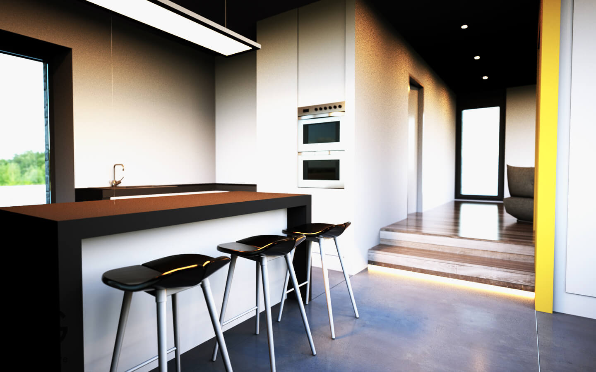
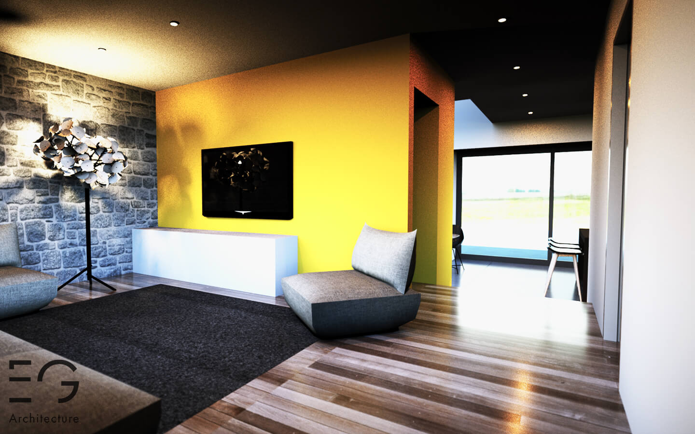
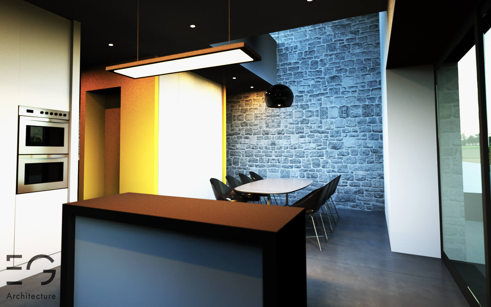

L’ancienne grange concernée par le projet fait partie d’une ferme en « U » ouverte sur l’espace publique.
L’intention de ce projet est de transformer cette ancienne étable semi-mitoyenne en une habitation unifamiliale de deux niveaux. Le maitre d’ouvrage profite des travaux pour isoler l’enveloppe du bâtiment par l’intérieur afin de conserver le parement extérieur en moellons.
Le volume existant reste totalement inchangé. La création d’une large baie vitrée d’angle orientée Sud amène un maximum de luminosité dans les espaces de vie. Le porche existant en façade avant est conservé et comblé par un parement en panneaux de fibres-ciment de teinte gris anthracite et percée d’une baie verticale afin de marquer l’intervention contemporaine. L’entrée principale est située au niveau du pignon et accessible depuis les places de parking.
Un mur recouvert de panneaux de fibre ciment, sépare visuellement cette entrée et les espaces extérieurs privés. Les différents percements sont marqués par des encadrements métalliques.
 La salle à manger est située à l’arrière du bâtiment et ouverte sur deux niveaux afin d’amener un maximum de lumière dans les espaces de vie mais également dans le hall de nuit de l’étage dont une partie est aménagée en bureau.
Projet précédent Projet suivant